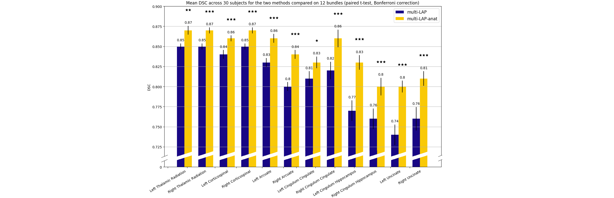

White Matter tract segmentation
This project aimed at automatically segment white matter tract in the human brain by considering both anatomy and geometry of the tracts.
Diffusion Magnetic Resonance Imaging (dMRI) can provide a virtual representation of the paths of millions
of fibers composing the brain white matter. The aim of white matter tract segmentation is to group together fibers that share a similar pathway
into anatomically meaningful structures, called tracts, which are of interest for several applications, such as
surgical planning and tractometry analyses.
Current methods for automatic tract segmentation consider either only prior knowledge about the
geometrical properties of a tract, or only its relative anatomical
position. To overcome this limitation, we extended a state-of-the-art
fiber-based method based on the Linear Assignment Problem (LAP) by taking into account
information about both the geometry of the tracts and the underlying anatomy at the same time.
The LAP method performs automatic tract segmentation by exploiting the concept of fiber correspondence across subjects. Given a set of previously segmented tracts as examples, the method aims to find the same tract in a new target subject by solving a combinatorial optimization problem. To include prior anatomical information within the optimization process, we proposed to linearly combine the distance matrix (i.e. the original cost matrix) with other two anatomically-informed matrices: the endpoint-based distance matrix and the Region of Interest (ROI)-based distance matrix.
We ran multiple experiments with multiple examples using the LAP method (multi-LAP) and the proposed method (multi-LAP-anat) to segment 6 large tracts and 6 small tracts. We then compared their performances through the Dice Similarity Coefficient (DSC) score, which measures the degree of overlap with the ground truth tract (the higher the better). The proposed multi-LAP-anat method outperforms the multi-LAP method for all the bundles considered. Higher improvements were obtained in particular for smaller bundles.
Read the full paper here: https://ieeexplore.ieee.org/document/8759174
Read the poster here: lap-anat-poster.pdf
Try the brainlife App here: https://doi.org/10.25663/brainlife.app.227
Code: app-multi-lap-anat
Citation: Bertò, G., Avesani, P., Pestilli, F., Bullock, D., Caron, B. and Olivetti, E., 2019, April. Anatomically-Informed Multiple Linear Assignment Problems for White Matter Bundle Segmentation. In 2019 IEEE 16th International Symposium on Biomedical Imaging (ISBI 2019) (pp. 135-138). IEEE.